Temporal structure repeats
A daily cycle, a weekly shape, and a slower trend can express similar local structure at different resolutions. Fracast-0 treats that self-similarity as a compression opportunity.
85K-parameter time series foundation model
Small enough to load directly in a web page.
1 University of Electronic Science and Technology of China 2 Peking University † Corresponding author
Technical report in preparation
“We built this solely to explore whether model compression can be pushed to an even more extreme state. We spent 15 days on this exploration. Although the work is not perfect, it is at least usable, so we are releasing it. Fracast-0 is the published version, and future versions will only get better.”
A daily cycle, a weekly shape, and a slower trend can express similar local structure at different resolutions. Fracast-0 treats that self-similarity as a compression opportunity.
Instead of giving every temporal scale a separate set of weights, the model applies one shared causal dilated block along a geometric dilation ladder. FiLM conditioning tells the block which scale it is operating on.
The decoder combines context-gathered states with an explicit seasonal future state and emits nine quantile forecasts from 0.1 through 0.9.
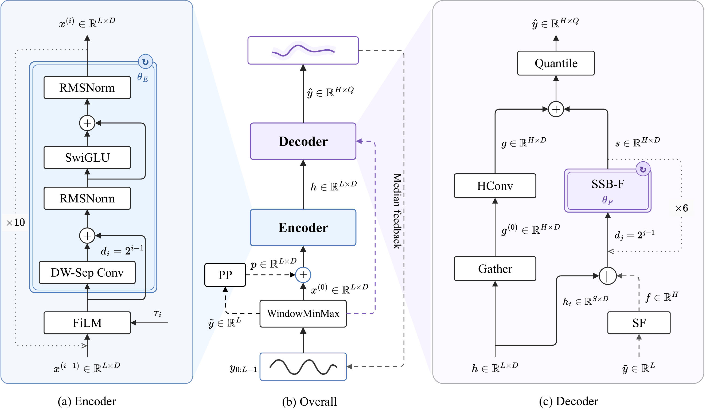
Normalize each window, preserve missingness, and derive bounded recency features plus a seasonal prior.
Project seven input features to the hidden width, then reuse the same local block across scales with scale conditioning.
Gather relevant context states, combine them with a periodic future state, and map the result to the target horizon.
Scores use the official GIFT-Eval protocol without per-dataset fine-tuning. The model is pretrained on corpora that overlap GIFT-Eval families, so these results are labeled pretrained rather than strict zero-shot. Lower MASE and WQL are better.
| Benchmark | Headline result | Scope | Result status |
|---|---|---|---|
| GIFT-Eval | Normalized MASE 0.807133 Normalized MWQL 0.563008 | 97 configurations | Official results |
| TIME | Normalized MASE 0.767965 Normalized CRPS 0.649192 | 98 tasks; rank 24/29 on both metrics | Merged |
| FEV-Bench | Controlled MASE rank 16/30 Controlled SQL rank 16/30 | 100 tasks; raw ranks MASE 20/30 and SQL 17/30 | PR #189: open |
GIFT-Eval and TIME results are published in their official repositories. FEV-Bench is under official review; its displayed values are reproduced from the archived local protocol run.
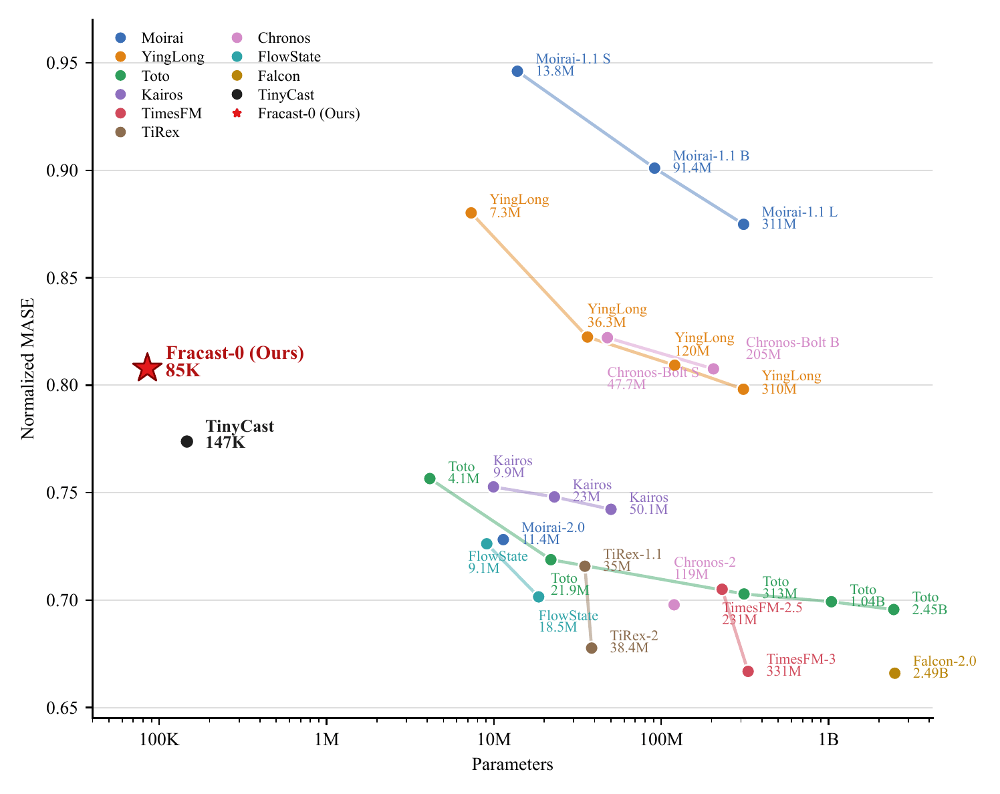
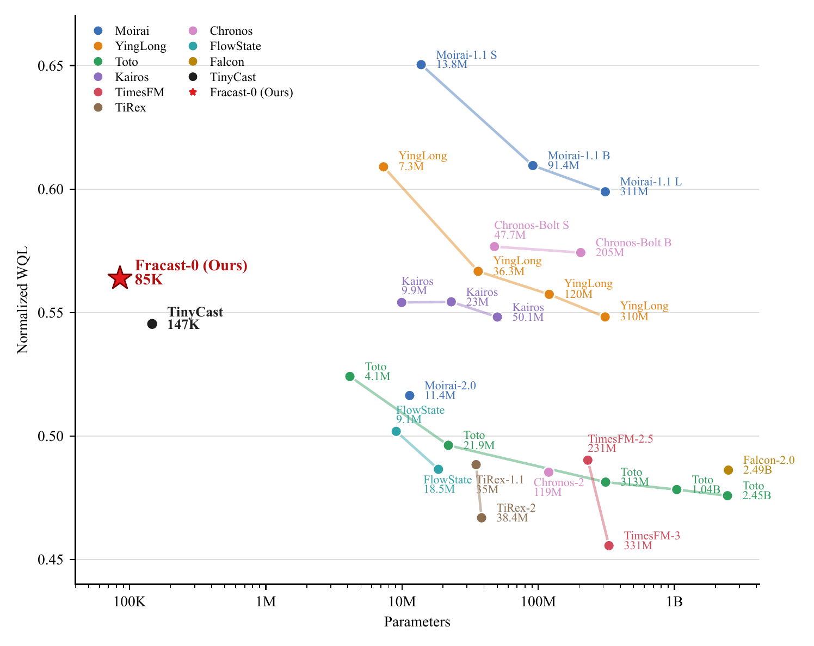
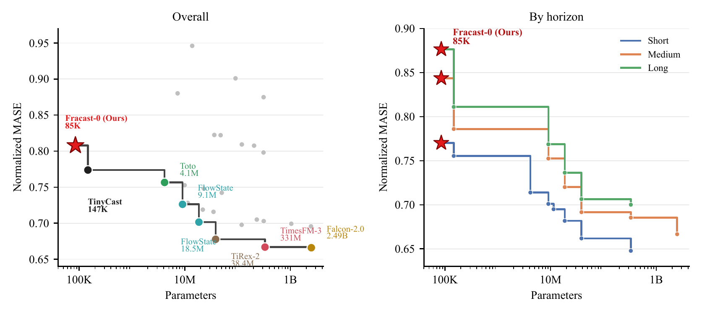
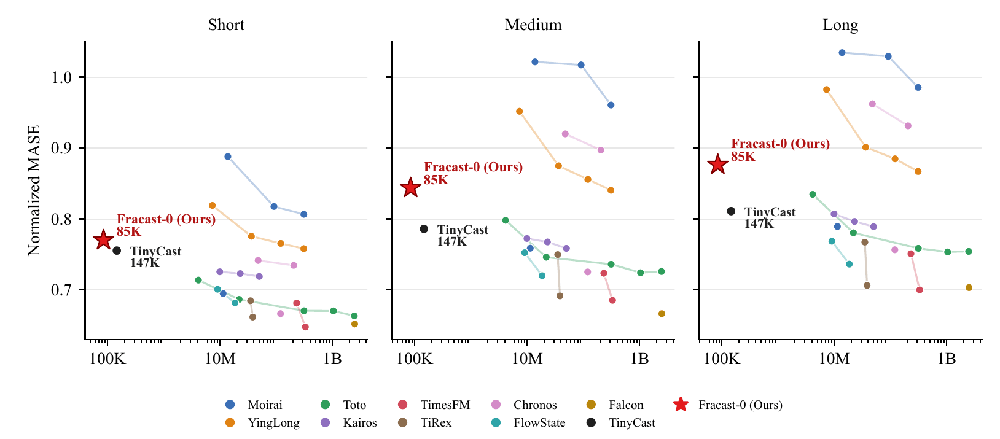
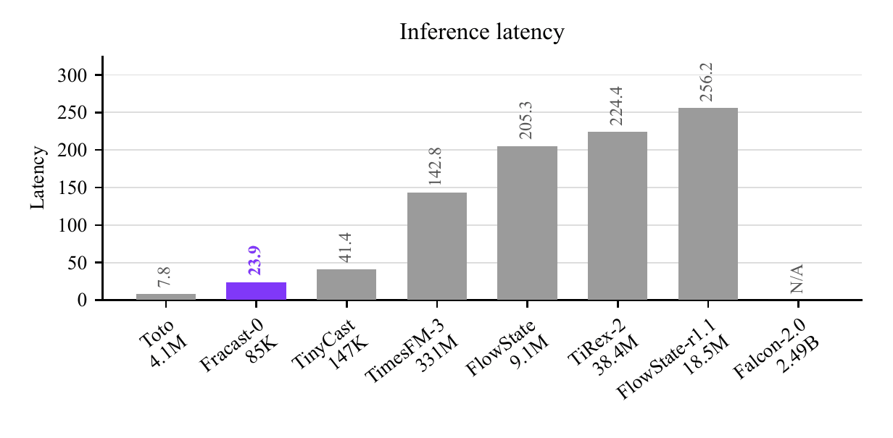
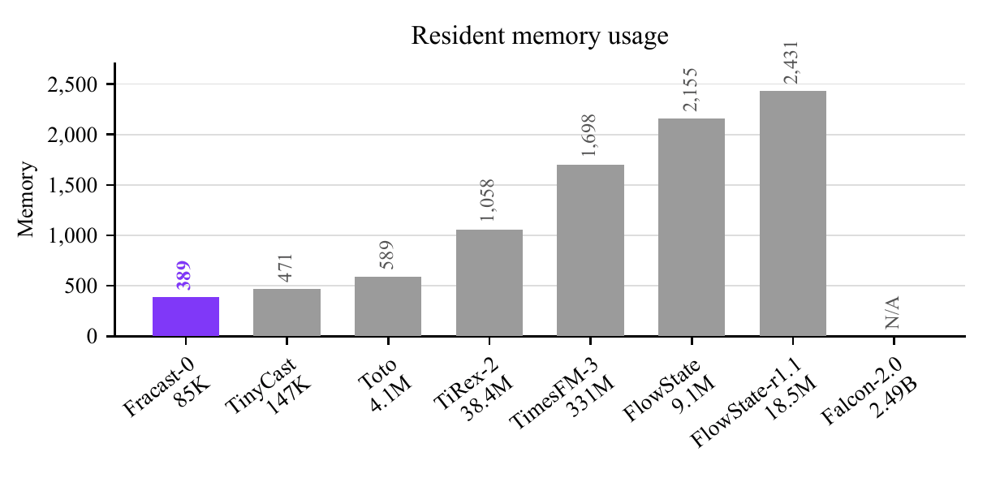
Six selected GIFT-Eval windows cover smooth levels, abrupt load changes, daily weather cycles, periodic solar generation, and noisy event counts. The shaded band is Fracast-0’s 10–90% interval.
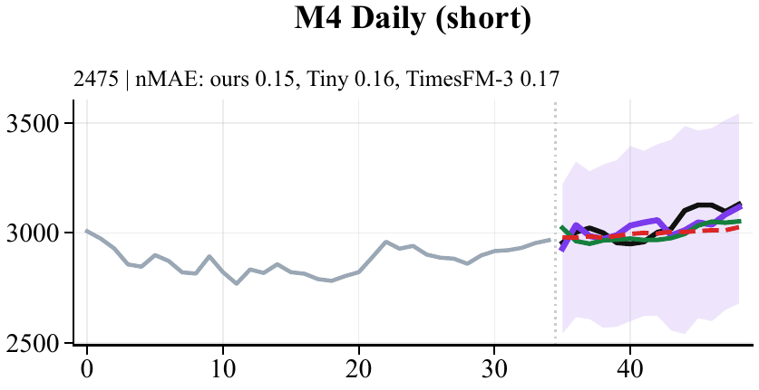
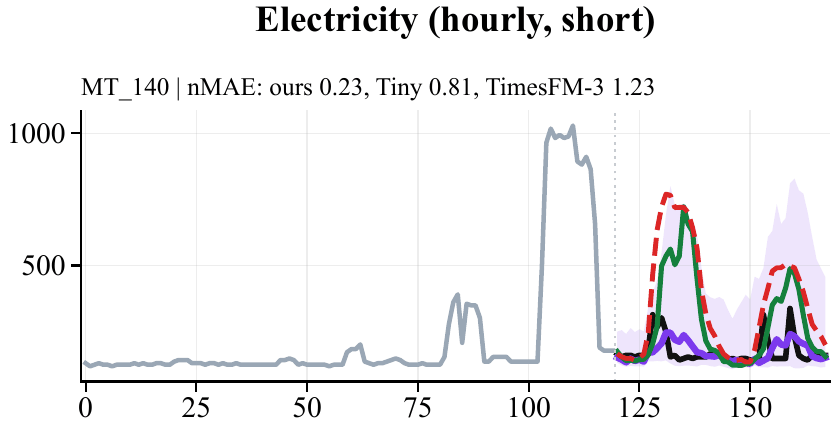
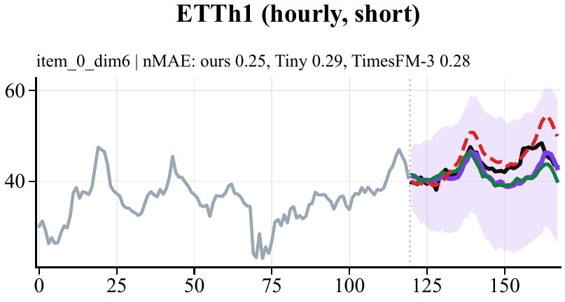
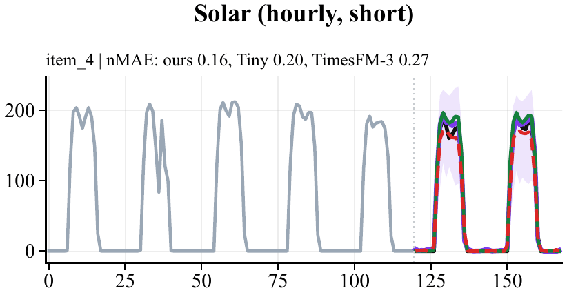
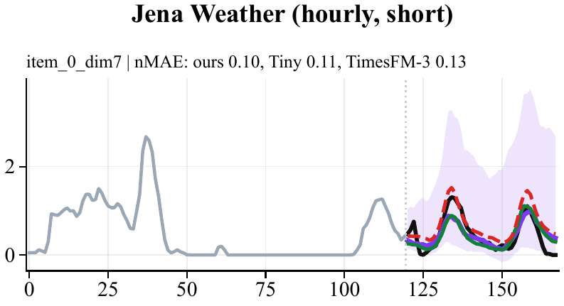
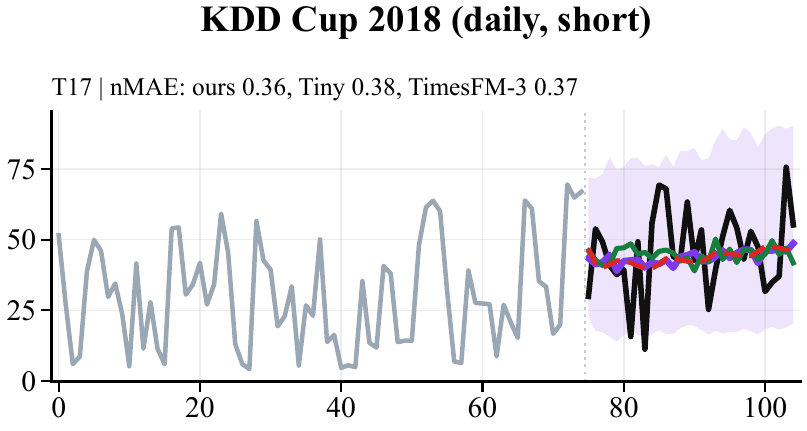
python -m pip install fracastUnivariate or channel-independent forecasting, memory-constrained deployment, probabilistic outputs, and short-horizon scoring on CPU.
The released model is channel independent, natively predicts 48 steps per block, and needs rollout for longer horizons. The W8 export dequantizes weights and is not an integer-only kernel.
Run Fracast-0 in your browser with preset traffic data. No installation or GPU required.
Open the web demo@software{ztxtech_fracast_0,
author = {Zhan, Tianxiang and Zhang, Huanyao and He, Yuanpeng},
title = {Fracast-0: Fractal Weight Sharing for a Time Series Foundation Model with Only 85K Parameters},
year = {2026},
url = {https://github.com/ztxtech/fracast-0}
}We thank Xiaomi MiMo V2.6 Pro and DeepSeek V4.1 Flash for supporting the implementation, debugging, and release work behind Fracast-0.
We are seeking sponsors for continued research, API credits, and server resources. Contact us at zhantianxianguestc@hotmail.com.